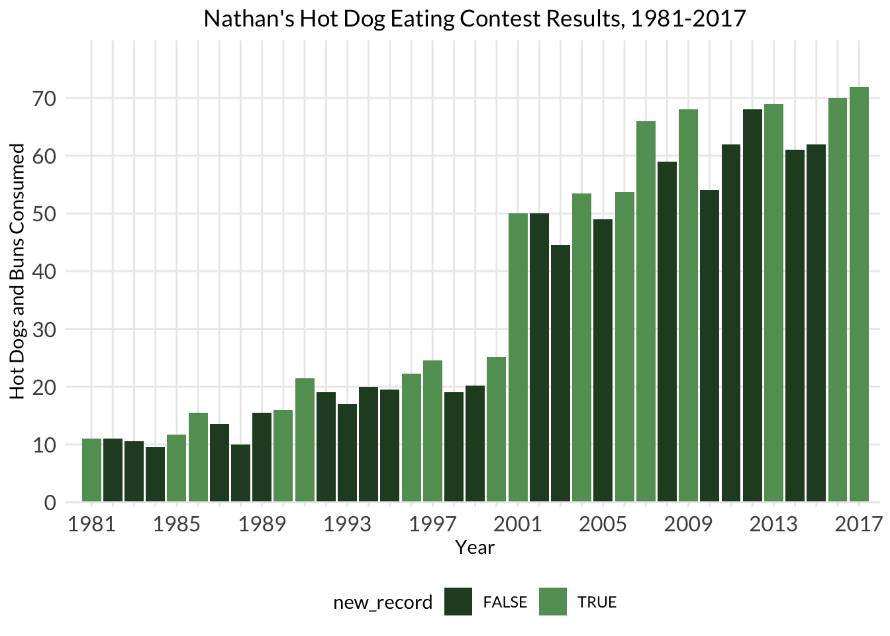

Lab 05: Addendum
BMI 5/625
Alison Hill
1 Packages
library(tidyverse)
library(babynames)
# load hd data
hot_dogs_aff <- read_csv("http://bit.ly/cs631-hotdog-affiliated",
col_types = cols(
affiliated = col_factor(levels = NULL),
gender = col_factor(levels = NULL)
)) %>%
mutate(post_ifoce = year >= 1997) %>%
filter(year >= 1981 & gender == "male") 2 Plot 1: Add
What is this code trying to accomplish?
temp=hot_dogs_aff
for (i in 1:nrow(hot_dogs_aff)) {
# if the maximum num_eaten is equal to the num_eaten for the year AND it's not the same as the year before
if ((max(temp$num_eaten) == hot_dogs_aff$num_eaten[i]) && (max(temp$num_eaten) != hot_dogs_aff$num_eaten[i+1]) && (i<nrow(hot_dogs_aff))) {
hot_dogs_aff$record[i] = TRUE
temp = temp[-1,] # take the most recent year OUT of the running
} else if (i<nrow(hot_dogs_aff)) {
hot_dogs_aff$record[i] = FALSE
temp = temp[-1,]
}
}
label.df <- data.frame(year = hot_dogs_aff$year[hot_dogs_aff$record],
num_eaten = hot_dogs_aff$num_eaten[hot_dogs_aff$record]) # turn this into a label dataframe3 Tidyverse approach
The first thing we notice is that we don’t have data about whether each year’s winner is a record or not.
hot_dogs <- read_csv("http://bit.ly/cs631-hotdog",
col_types = cols(
gender = col_factor(levels = NULL)
))Since our data is nicely tidy, we can use dplyr window
functions:
First, we use base R’s
cummaxto create a new variable that reflects the maximum HDB eaten cumulatively, that is, compared to all earlier years. For this reason, thearrange(year)here is critical.Next, we want to know if the
hdb_recordis actually a new record or not, compared to all previous years. We can usecase_whento create a logical variable that is TRUE if thehdb_recordfor a given year is greater than thehdb_recordfrom the year before (usingdplyr::lag). If not, this variable is FALSE.
hot_dogs_records <- hot_dogs %>%
filter(year >= 1980 & gender == 'male') %>%
arrange(year) %>%
mutate(hdb_record = cummax(num_eaten),
new_record = case_when(
hdb_record > lag(hdb_record) ~ TRUE,
TRUE ~ FALSE
)) %>%
filter(year >= 1981)We’ll also make our x-axis ticks again…
years_to_label <- seq(from = 1981, to = 2017, by = 4)
years_to_label [1] 1981 1985 1989 1993 1997 2001 2005 2009 2013 2017hd_years <- hot_dogs_records %>%
distinct(year) %>%
mutate(year_lab = ifelse(year %in% years_to_label, year, ""))hdb_records <- ggplot(hot_dogs_records,
aes(x = year, y = num_eaten)) +
geom_col(aes(fill = new_record)) +
labs(x = "Year", y = "Hot Dogs and Buns Consumed") +
ggtitle("Nathan's Hot Dog Eating Contest Results, 1981-2017") +
scale_fill_manual(values = c('#284a29', '#629d62')) +
scale_y_continuous(expand = c(0, 0),
breaks = seq(0, 70, 10)) +
scale_x_continuous(expand = c(0, 0),
breaks = hd_years$year,
labels = hd_years$year_lab) +
coord_cartesian(xlim = c(1980, 2018), ylim = c(0, 80)) +
theme_minimal() +
theme(plot.title = element_text(hjust = 0.5),
axis.text = element_text(size = 12),
panel.background = element_blank(),
axis.line.x = element_line(color = "gray92",
size = 0.5),
axis.ticks = element_line(color = "gray92",
size = 0.5),
text = element_text(family = "Lato"),
legend.position = "bottom",
panel.grid.minor = element_blank())
hdb_records
4 Plot 2
Goal is to observe popular first letter trends in
babynames. First filter/arrange data.
# add column of first letters
baby_letters <- babynames %>%
mutate(first_letter = str_sub(name, 1, 1))
# add up proportion for each letter by year + sex
letter_by_year <- baby_letters %>%
count(year, sex, first_letter, wt = prop) %>%
rename(total_prop = nn)Error in `rename()`:
! Can't rename columns that don't exist.
✖ Column `nn` doesn't exist.# label most popular for each year + sex
letter_by_year <- letter_by_year %>%
group_by(sex, year) %>%
mutate(top_yearly = case_when(
total_prop == max(total_prop) ~ first_letter)) %>%
ungroup() %>%
mutate(top_latest = case_when(
year == max(year) ~ top_yearly
))Error: object 'letter_by_year' not found# make a data frame with just latest top letters
top_current <- letter_by_year %>%
filter(!is.na(top_latest)) %>%
rename(color_by = top_latest) %>%
select(sex, first_letter, color_by)Error: object 'letter_by_year' not found# now merge in
letter_by_year <- letter_by_year %>%
left_join(top_current) %>%
mutate(color_by = replace_na(color_by, "else"))Error: object 'letter_by_year' not found# set up my colors for males and females
my_colors <- c("#FF1493", "gray80", "#3399ff")Plot it!
ggplot(letter_by_year, aes(x = year, y = total_prop, color = color_by, group = first_letter)) +
geom_line() +
scale_color_manual(values = my_colors) +
facet_wrap(~sex)Error: object 'letter_by_year' not foundColorM2 <- c(A="Gray80",B="gray80",C="gray80",D="gray80",E="gray80",F="gray80",G="gray80",H="gray80",I="gray80",J="Black",K="gray80",L="gray80",M="gray80",N="gray80",O="gray80",P="gray80",Q="gray80",R="gray80",S="gray80",T="gray80",U="gray80",V="gray80",W="gray80",X="gray80",Y="gray80",Z="gray80")
ColorF2 <- c(A="Black",B="gray80",C="gray80",D="gray80",E="gray80",F="gray80",G="gray80",H="gray80",I="gray80",J="gray80",K="gray80",L="gray80",M="gray80",N="gray80",O="gray80",P="gray80",Q="gray80",R="gray80",S="gray80",T="gray80",U="gray80",V="gray80",W="gray80",X="gray80",Y="gray80",Z="gray80")